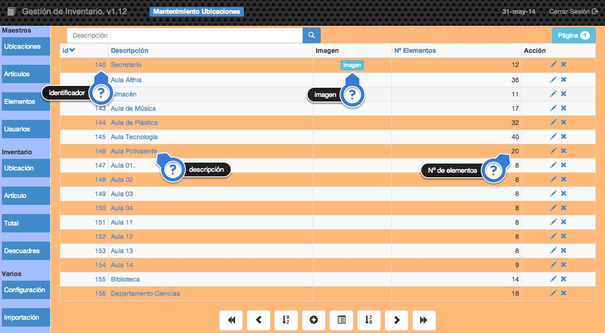
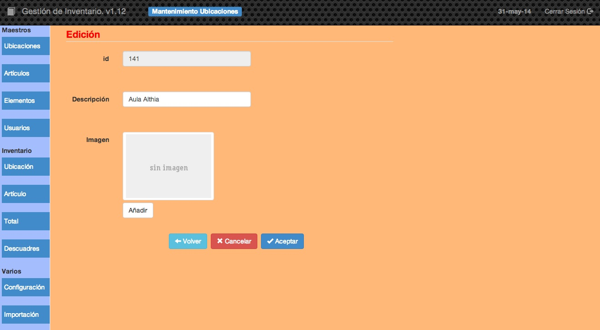

2.1.1 Ubicaciones
Es una tabla muy sencilla en la que almacenaremos las diferentes ubicaciones del centro donde podamos tener cualquier elemento del inventario.
También puede ser cualquier persona/centro al que hayamos prestado cualquier elemento del inventario.
Por ejemplo:
Aula de Ciencias
Aula de Idiomas
etc.
Podremos almacenar también si queremos la imagen de la ubicación.

En la pantalla podemos ver los siguientes datos:
- identificador: Es el código único asignado de forma automática por la aplicación a cada registro que añadamos a la tabla. Como se puede ver, podemos establecer el orden de visualización con este campo pulsando sobre
iden la cabecera de la tabla. Si pulsamos sobre el indicador de una ubicación obtendremos el listado de los elementos asociados a esa ubicación, es decir, obtendremos el inventario de esa ubicación. - Descripción: Es la descripción de la ubicación. Para establecer el orden de visualización por este campo tendremos que pulsar sobre
Descripciónen la cabecera de la tabla. Si pulsamos doble click sobre la descripción de una ubicación cualquiera podremos editarla sin tener que entrar en la pantalla de edición. - Imagen: Si la ubicación tiene asociada una imagen aparecerá el icono imagen y al pulsar sobre este icono se nos mostrará la imagen.
- Nº de elementos: Este es un campo que calcula la aplicación y nos muestra el número de registros de la tabla elementos que están asociados a esta ubicación. Un número 0 indicaría que todavía no hay ningún elemento asociado a esta ubicación.
Si pulsamos sobre el botón de editar alguna ubicación obtendremos una pantalla como esta:

En ella podremos cambiar la descripción de la ubicación además de poder asignarle una imagen. Si pulsamos sobre el botón de añadir una imagen depende de si estamos accediendo a la aplicación desde un ordenador o desde un dispositivo móvil, en el primer caso aparecerá el cuadro de diálogo de selección de archivo y en el segundo caso nos aparecerá la opción de seleccionar un archivo o de tomar una fotografía para añadirla.